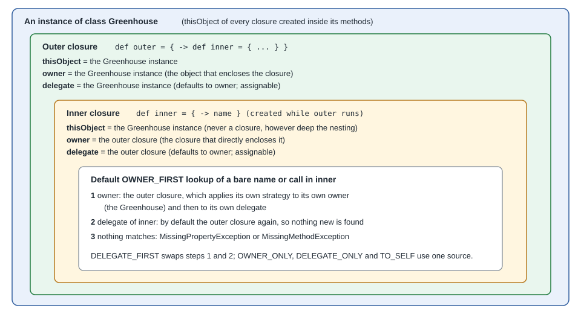

Closure Delegation: Owner, Delegate & This
|
This content was generated with the assistance of AI and should be verified against the official documentation before being relied on in production. |
This page is written against Apache Groovy 6.0 (6.0.0, 2026-09-22) and every example was run with Groovy 6.0.0 on JDK 26
(checked on 2026-10-14). A closure is more than an anonymous function: when its body uses a bare name such as name or a
bare call such as label(), Groovy has to decide which object supplies it. Three references and one setting control the
answer, and they are the mechanism behind every Groovy builder, with and tap, and the greenhouse watering DSL in
Domain Specific Languages. The basics of closures
(syntax, parameters, calling) are on Closures; this page is only about
resolution.
The three references
Every groovy.lang.Closure carries three references, all readable as properties of the closure:
-
thisObject(read asthisinside the body): the instance of the class that lexically encloses the closure. It never changes and is never a closure, however deeply closures are nested. In a static method it is theClassobject, in a script it is the script instance. -
owner: the object that directly encloses the closure. For a top-level closure it is the same object asthisObject; for a closure created inside another closure it is that other closure. -
delegate: an object the closure may use as an additional lookup target. It defaults to the owner and is the only one of the three that is meant to be reassigned.

The next example inspects all three for a closure nested in a closure, defined in a method of a class.
class Greenhouse {
def probe() {
def outer
outer = { ->
def inner = { -> }
inner
}
def inner = outer()
[
'outer.owner is Greenhouse' : outer.owner.is(this),
'outer.delegate is Greenhouse' : outer.delegate.is(this),
'outer.thisObject is Greenhouse' : outer.thisObject.is(this),
'inner.owner is outer' : inner.owner.is(outer),
'inner.delegate is outer' : inner.delegate.is(outer),
'inner.thisObject is Greenhouse' : inner.thisObject.is(this),
]
}
}
new Greenhouse().probe().each { k, v -> println "${k.padRight(34)} $v" }outer.owner is Greenhouse true
outer.delegate is Greenhouse true
outer.thisObject is Greenhouse true
inner.owner is outer true
inner.delegate is outer true
inner.thisObject is Greenhouse trueTwo special cases follow from the definitions. In a static method this inside a closure is the class itself, and in a
script it is the script instance, which is why def c = { this.getClass().simpleName } at the top level of a script
file named p5.groovy prints p5.
class Util {
static Closure make() { { -> this } }
static Closure makeOwner() { { -> owner } }
}
println Util.make()()
println Util.makeOwner()().is(Util)class Util
trueThe resolution rule and the five strategies
When the body of a closure uses a name that is not a local variable or a parameter, Groovy asks the objects named by the
closure’s resolveStrategy in a fixed order, and throws MissingPropertyException (for a name) or
MissingMethodException (for a call) when none of them has it. Local variables and parameters are bound by the compiler
and never reach this mechanism. The strategy is a constant on Closure:
| Constant | Lookup order | Typical use |
|---|---|---|
|
owner, then delegate |
Ordinary closures: the surrounding code wins, the delegate fills the gaps |
|
delegate, then owner |
Builders and DSLs: the object being configured wins |
|
owner only, delegate ignored |
Forbid delegate lookups |
|
delegate only, owner ignored |
Strict configuration blocks |
|
the closure itself only, no owner or delegate |
Closure subclasses that implement their own |
The experiment below builds one closure per case in a Greenhouse (the owner) and gives it a Probe as delegate. The owner
and the delegate both have name and label(); nickname and probeOnly() exist only on the delegate.
class Greenhouse {
String name = 'greenhouse'
String label() { 'Greenhouse.label' }
Closure both() { { -> [name, label()] } }
Closure onlyPr() { { -> [name, nickname] } } // nickname exists only on the delegate
Closure onlyFn() { { -> probeOnly() } } // probeOnly() exists only on the delegate
}
class Probe {
String name = 'probe'
String nickname = 'p1'
String label() { 'Probe.label' }
String probeOnly() { 'Probe.probeOnly' }
}
def strategies = [OWNER_FIRST: Closure.OWNER_FIRST, DELEGATE_FIRST: Closure.DELEGATE_FIRST,
OWNER_ONLY: Closure.OWNER_ONLY, DELEGATE_ONLY: Closure.DELEGATE_ONLY, TO_SELF: Closure.TO_SELF]
['both', 'onlyPr', 'onlyFn'].each { maker ->
println "-- ${maker}"
strategies.each { label, strategy ->
Closure c = new Greenhouse()."$maker"()
c.delegate = new Probe()
c.resolveStrategy = strategy
String result
try {
result = c().toString()
} catch (MissingPropertyException | MissingMethodException e) {
result = e.class.simpleName
}
println "${label.padRight(15)} ${result}"
}
}-- both
OWNER_FIRST [greenhouse, Greenhouse.label]
DELEGATE_FIRST [probe, Probe.label]
OWNER_ONLY [greenhouse, Greenhouse.label]
DELEGATE_ONLY [probe, Probe.label]
TO_SELF MissingPropertyException
-- onlyPr
OWNER_FIRST [greenhouse, p1]
DELEGATE_FIRST [probe, p1]
OWNER_ONLY MissingPropertyException
DELEGATE_ONLY [probe, p1]
TO_SELF MissingPropertyException
-- onlyFn
OWNER_FIRST Probe.probeOnly
DELEGATE_FIRST Probe.probeOnly
OWNER_ONLY MissingMethodException
DELEGATE_ONLY Probe.probeOnly
TO_SELF MissingMethodExceptionWhat the output shows:
-
With the default
OWNER_FIRSTthe owner’snamewins and the delegate is only consulted for what the owner lacks (nickname,probeOnly()). -
DELEGATE_FIRSTflips the shared names but still falls back to the owner for names the delegate lacks. -
OWNER_ONLYandDELEGATE_ONLYnever fall back: a name present only on the ignored side is an error. -
TO_SELFconsults neither, so even the owner’snameis missing; a plain closure has no such members.
Nested closures: the chain of owners
The owner of an inner closure is the outer closure, so a lookup that starts in the inner closure continues in the outer one,
and the outer closure applies its own resolve strategy and delegate. A strategy set on the outer closure therefore shows
through to every closure nested in it, even though each closure has its own resolveStrategy.
class Probe { String reading = 'probe reading' }
class Host {
String reading = 'host reading'
Closure make() {
Closure outer = { -> Closure inner = { -> reading }; inner() }
outer.delegate = new Probe()
outer.resolveStrategy = Closure.DELEGATE_FIRST
outer
}
}
println new Host().make()() // inner has the default strategy, but its owner is outerprobe readingThe inner closure uses the default OWNER_FIRST, yet its owner is the outer closure, which looks at its delegate first and
finds reading there before it reaches Host. The practical rules for nested builder blocks are:
-
A name used in a nested block is first offered to the enclosing block’s owner chain, so an inner block can reach the outer block’s delegate without any extra code. This is what lets
html { body { p 'x' } }callpon the innermost builder node while still seeing methods of the outer ones. -
Setting
delegateon the inner closure does not change what the outer closure sees, and the reverse. -
thisObjectis the same for every level, sothisinside a deeply nested closure is still the enclosing class, not any closure.
Changing the delegate: rehydrate and dehydrate
A closure that arrives as a method argument already has an owner (the caller’s object) and a default delegate. Builders
need to point it at their own object. Assigning delegate and resolveStrategy on the closure itself works, but mutates
the object the caller passed. rehydrate(delegate, owner, thisObject) returns a copy with the three references replaced
and leaves the original untouched, which makes it safe to call the same closure on several objects. dehydrate() returns a
copy with all three set to null, useful to serialise a closure or to prevent it from retaining its creator.
class Schedule {
List entries = []
void water(String plant) { entries << plant }
static Schedule build(@DelegatesTo(Schedule) Closure spec) {
def s = new Schedule()
def code = spec.rehydrate(s, spec.owner, spec.thisObject) // a copy with new this/owner/delegate
code.resolveStrategy = Closure.DELEGATE_FIRST
code()
s
}
}
println Schedule.build { water 'tomatoes'; water 'basil' }.entries
def original = { -> name }
def copy = original.rehydrate([name: 'from an Expando'] as Expando, null, null)
copy.resolveStrategy = Closure.DELEGATE_ONLY
println copy()
println original.delegate.getClass().simpleName // the original is untouched
def d = original.dehydrate() // copy without owner, delegate and this
println "dehydrated: delegate=${d.delegate} owner=${d.owner} this=${d.thisObject}"[tomatoes, basil]
from an Expando
p4
dehydrated: delegate=null owner=null this=nullThe p4 line is the script instance: the unmodified original still has the script as its delegate. A dehydrated closure
has nothing to resolve names against, so rehydrate it before calling it.
The same idea is built into two GDK methods. with and tap call a closure with the receiver as delegate and
DELEGATE_FIRST; with returns the closure’s result, tap returns the receiver. Local variables are not affected: the
compiler resolves them before delegation, so a local of the same name as a delegate property still wins.
println 'abc'.with { toUpperCase() + size() } // with: delegate is the receiver, DELEGATE_FIRST
def sb = new StringBuilder().tap { append 'x'; append 'y' }
println sb // tap: same, but returns the receiver
def label = 'local variable'
println([label: 'map entry'].with { label }) // locals are resolved by the compiler, not the delegate
def c = { -> this.getClass().simpleName }
println c() // in a script, this is the script instanceABC3
xy
local variable
p5For fields and the named-argument construction that with is often combined with, see
Classes, Fields & Properties.
Declaring what a delegate is: @DelegatesTo
Delegation is invisible to the compiler: for Planner.plan { step 'water' } nothing says that step belongs to
Plan. A dynamic Groovy program does not care, but an IDE cannot complete step, and @TypeChecked or @CompileStatic
code cannot compile the call. The annotation groovy.lang.DelegatesTo on the closure parameter states the delegate type.
It is documentation for tools, and for the type checker it also changes how the closure body is checked; it does not set the
delegate at run time, so the builder must still assign delegate (and, usually, DELEGATE_FIRST), as the earlier examples do.
import groovy.transform.CompileStatic
import groovy.transform.TypeChecked
class Plan {
List<String> steps = []
void step(String s) { steps << s }
}
@CompileStatic
class Planner {
static Plan plan(@DelegatesTo(Plan) Closure<?> spec) {
Plan p = new Plan()
spec.delegate = p
spec.resolveStrategy = Closure.DELEGATE_FIRST
spec()
p
}
}
@TypeChecked
def good() { Planner.plan { step 'water'; step 'vent' }.steps }
println good()[water, vent]Without the annotation the same call does not type-check. Removing @DelegatesTo(Plan) from plan and compiling a
@TypeChecked caller gives:
p7.groovy: 15: [Static type checking] - Cannot find matching method p7#step(java.lang.String). Please check if the declared type is correct and if the method exists.
@ line 15, column 28.
def bad() { Planner.plan { step 'water' } }The annotation has more options than shown here: strategy (to declare Closure.DELEGATE_FIRST or another strategy),
genericTypeIndex and type for delegates that are not known by a plain class, and target and value for methods with
several closure parameters. They are covered in
Domain Specific Languages, and the type-checking side
in Static Type Checking & @CompileStatic.
Delegation in builders
Every Groovy builder is this mechanism applied repeatedly. A builder method receives a closure, creates a node, makes the node
(or the builder) the delegate of the closure, sets DELEGATE_FIRST, and runs it. A nested block repeats the step, and the
chain of owners described above lets the inner block still see the outer nodes. Because the resolution is by name at run
time, a call such as tomatoes { ... } can be answered by the builder’s invokeMethod or methodMissing. Notes for builder
authors:
-
Pick
DELEGATE_FIRSTso the configured object shadows the caller’s own members; the caller’s local variables are never shadowed, because they are not looked up through the delegate. -
Declare the delegate with
@DelegatesToso IDEs and the type checker understand the block. -
Rehydrate rather than mutate when the same closure may be run more than once.
-
Prefer
OWNER_ONLYorDELEGATE_ONLYwhen a block must not silently fall through to the other object.
The ready-made builders (MarkupBuilder, JsonBuilder, SwingBuilder and others) are covered in
Builders. Kotlin reaches the same result with lambdas with receiver; see
Kotlin Type-safe Builders & DSLs.
Common mistakes
-
Reading
thisas the closure: it is the enclosing class instance, never the closure. The closure object itself is what a nested closure sees as itsowner. -
Assigning
delegateand expecting it to win: with the defaultOWNER_FIRSTthe owner still shadows it for names both have. SetresolveStrategytoo. -
Relying on delegation in
@CompileStaticcode without@DelegatesTo: the closure body fails to compile. -
Expecting a local variable to come from the delegate: locals are resolved by the compiler and never delegated.
Where the book is outdated
The Manning book Groovy in Action (publisher page in the references) introduced closures and the this, owner and
delegate scoping rules in its first edition, and the rules above still hold. Check the following against the current
documentation instead of the book:
-
@DelegatesToand the type-checking support for delegating closures, added after the book was written. -
rehydrate,dehydrateand theTO_SELFstrategy, and thetapmethod. -
The way builders are declared and tested under
@CompileStatic.